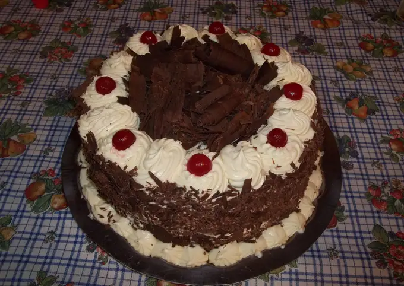
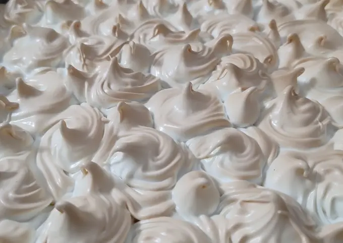

Novedades
Como hacer un buen café en casa
Como hacer un buen cafe en cafetera italiana
Receta de nuestras tortas
Torta Negra
Ingredientes 50 minutos 4 raciones 400 gr azúcar 270 gr harina leudante 60 gr cacao amargo 2 cdts sal 250 cc leche 4 huevos 250 gr manteca 1 cda esencia de vainilla ---------------- Para el relleno y decorar 200 gr cerezas 1 pote dulce de frutillas 500 gr crema chantilly C/N chocolate cobertura (rulos decoración)
Receta de nuestras tortas
Torta Negra
Ingredientes 200 g Harina 0000 100 g Manteca 4 cdas Azúcar 1 Huevo 1 Yema 1/2 Ralladura de limón (bien chiquito y sin lo blanco) --------- Para el relleno: 1 Limón (jugo y ralladura sin lo blanco) 100 g Azúcar 200 ml Agua 1 cda Manteca 2 cdas Fécula de Maíz 2 Yemas ------- Merengue suizo 3 Claras (sobrantes de la receta) 9 cdas Azúcar
Como es el Proceso del Cafe Ecologico
De donde extraemos el café
Receta de tortilla de papas relleno
Ingredientes para un molde de 26 cm. de diámetro 1,5 kilos de papa negra 500 g de mozzarella 6 fetas de jamón cocido 7 u 8 huevos Sal
Paso 1 Pelar las papas. Cortarlas en rodajas de 1 dedo de ancho. Luego, cortarlas en tiras y finalmente en cubitos. Paso 2 Freírlas en abundante aceite, hasta que estén blandas, no doradas. Paso 3 Cuando estén frías, colocarlas en un bol y sumar los huevos. Salar y mezclar. Paso 4 Pintar el molde con aceite y llevarlo al horno unos minutos hasta que esté caliente. Retirarlo con cuidado. Paso 5 Verter la mitad de la mezcla de papas y huevo. Acomodar y colocar la mozzarella picada encima. Cubrir con el jamón y volcar el resto de de las papas. Con una espátula, tratar de emparejar. Paso 6 Llevar al horno a 180°, por 10 minutos. Paso 7 Pasar una espátula por los bordes. Con la ayuda de un plato darla vuelta y volver a colocarla en el molde. Llevar nuevamente al horno, otro 10 minutos. Paso 8 Retirar, desmoldar y servir.

Receta de Canelones
12 láminas de pasta para canelones 500 gr de carne picada 1 cebolla, finamente picada 2 dientes de ajo, picados 1 zanahoria, rallada o picada en cubos pequeños 1 tallo de apio, picado en cubos pequeños 2 cucharadas de aceite de oliva 1 cucharadita de orégano seco 1 cucharadita de tomillo seco Sal y pimienta a gusto 1 huevo 1/2 taza de pan rallado 1/2 taza de queso rallado (parmesano o mozzarella) Salsa de tomate o salsa bechamel Queso rallado adicional para espolvorear por encima
Cocinar la cebolla, el ajo, la zanahoria y el apio picados. Agregar la carne picada y cocinar hasta que esté dorada y bien cocida. Añadir el orégano, el tomillo, la sal y la pimienta, y mezclar bien. Retirar del fuego y dejar enfriar un poco. Añadir a la sartén el huevo batido, el pan rallado y el queso rallado. Esta mezcla es el relleno de los canelones. Cocinar las láminas de pasta para canelones en agua hirviendo con sal hasta que estén al dente. Escurrirlas y enjuagarlas con agua fría para detener la cocción y evitar que se peguen. Rellenar cada lámina con una porción de la mezcla y enrollar en forma de cilindro. En una fuente para horno colocar una capa de salsa en el fondo y acomodar los canelones rellenos encima de la salsa. Cubrirlos con más salsa y espolvorear con queso rallado. Hornear los canelones de 25-30 minutos, o hasta que estén bien calientes y el queso esté dorado y burbujeante. Sacar del horno y dejar reposar unos minutos antes de servir.
Puedes escuchar una playlist preparada para vos mientras tomás tu café o desayunas con nosotros
Hamburguesa casera
1 kg. de carne picada 1 chorizo crudo (chorizo criollo, si estás en España, u otro que te parezca) 2 cebollas de verdeo (o 1 cebolla común) 2 huevos (opcional) 2 dientes de ajo 1 cdita. de pimentón 1 cda. de perejil picado Sal (más o menos 2 cditas) y pimienta
En un sartén, calentar la mitad el aceite. Una vez que esté listo, agregar la cebolla picada y el ajo granulado. Cocinar hasta que la cebolla esté blanda y transparente. En un bol, juntar todos los ingredientes (incluyendo el sofrito) y con la mano integrar, amasando levemente la carne. Dividir la mezcla en 6 porciones y luego darles la forma de hamburguesa del diámetro que cada uno estime conveniente. Refrigerar por 30 minutos. Volver a calentar aceite en el sartén y colocar las hamburguesas. Cocinar a fuego medio hasta que estén doradas por ambos lados y su interior esté cocido.

Wrap de Carne
200 gr de carne molida o asiento picado 1 cdta de Sazonador Parrilla Gourmet Sal de Mar Gourmet a gusto Mix de Pimientas Gourmet a gusto 2 cdas aceite Para servir el wrap: Tortillas para wraps Cebolla crispy Lechuga Choclo Tomate Queso rallado Aderezo para ensalada de palta y cilantro Gourmet
Comienza preparando la carne, agrega aceite a un sartén y calienta a fuego alto. Una vez que esté caliente, agrega la carne. Ten cuidado de no llenar demasiado el sartén, intenta darle espacio a la carne y que no topen unas con otras y así lograr una cocción perfecta. No muevas la carne hasta cuando creas que esté bien sellada, luego dale la vuelta cocínala por el otro lado unos minutos más. Retira del sartén y reserva. Sitúa una tortilla en el plato y agrega la carne, cebolla crispy, lechuga, choclo, tomate, queso rallado o los ingredientes que más te gusten. Finalmente, añade salsa de palta y cilantro gourmet para darle un sabor muy rico y fresco. Envuelve tu wrap y sirve inmediatamente.